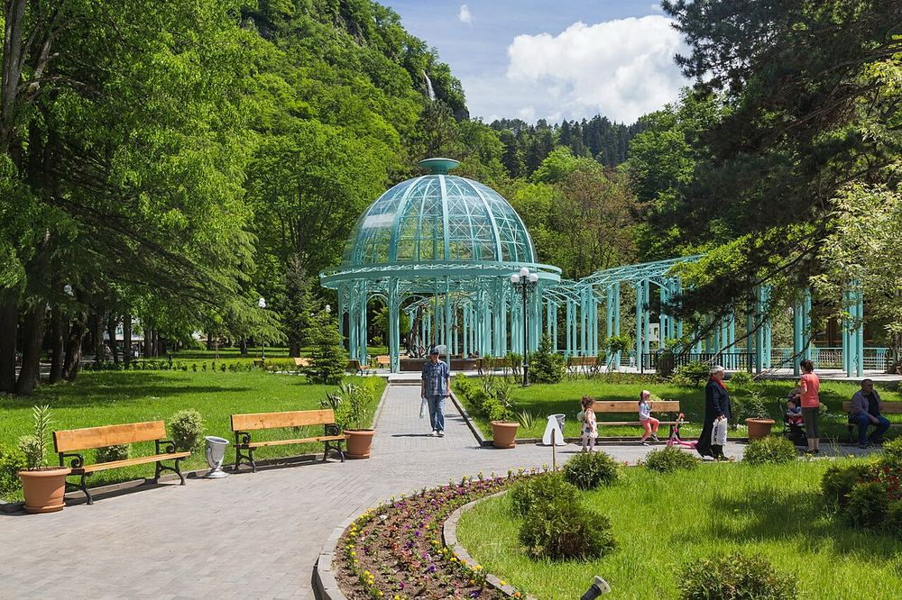

הפארק המרכזי של בורג'ומי: מעיין מינרלי, רכבל וגלגל ענק
4.5/5 Google · 15,749- שעות
- גוגל: מדי יום 9:00–20:00. בתי הקפה, לונה פארק, הרכבל והגלגל הענק פועלים בעיקר מסוף יוני עד תחילת ספטמבר (רכבל בערך 10:00–20:00; מבקר אחד ב-2025 מצא את הרכבל סגור, לכן לוודא שהוא פועל). יום ה' 19 באוגוסט.
- מחיר למשפחה
- כ-100 לארי (כ-33 €), הערכה: כניסה כ-5 לארי לאדם (המדריכים: 2–5 לארי) = 20 לארי, רכבל 15 לארי בכיוון אחד לאדם (יורדים ברגל בחינם) = 60 לארי, גלגל ענק כ-20 לארי (המחיר לא נמצא). מעיין המים המינרליים חינם. הערכה
- זמן
- 3–4 שעות (שבילים שטוחים ומוצלים; הפארק ארוך, כך שאפשר להסתפק במגרש המשחקים ובמעיין ליד הכניסה)
פארק עמק מוצל לאורך נהר, עם ביתן שבו זורמים מברזים מים מינרליים חמימים (מי בורג'ומי המפורסמים, מלוחים ועם ריח גופרית קל – הילדים יטעמו רק לגימה), רכבל לגלגל ענק, בתי קפה ולונה פארק. המקום הקריר ביותר ביום בטיול; 2.4 ק"מ למלון הם 5 דקות נסיעה.
ניווט · Google Maps · Madloba – Borjomi cable car · GoTrip – what to see in Borjomi (park, cable car, pools)